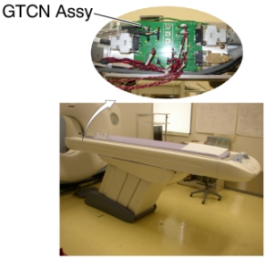
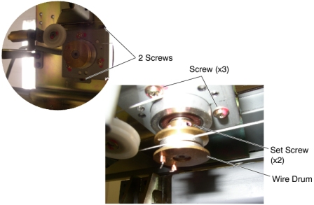
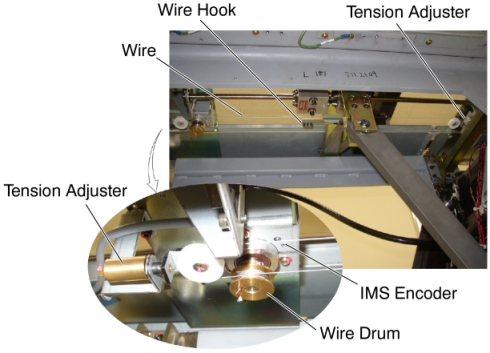
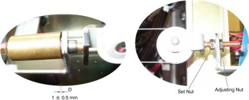

Operating Documentation
Direction 5196839-800, Rev# 6
RT16 and Xtra Service Info Adv
Operating Documentation |
| Required Persons | Preliminary Reqs | Procedure | Finalization |
|---|---|---|---|
| 2 |
| Last Revised: | 17 April 2008 |
| Item | Qty | Effectivity | Part# | Manufacturer | |
|---|---|---|---|---|---|
| IMS Encoder (5122208-xx) | 1 | - | - | - | |
Raise the Table to maximum height.
Move the Cradle and IMS to OUT limit position.
Remove power from Table by turning off 120VAC, Axial Drive and HVDC switches on Service Switch Panel.
Remove the following Table component and covers.
Cradle
Top Cover (Right/Left)
Rail Cover (Right/Left)
Top Plate (Front/Middle/Rear)
IMS Side Cover (Right/Left)
IMS Rear Cover
Front/Rear Side Plate (Left)
Front/Rear Leg Plate (Left)
Illustration 1: Table Covers

Disconnect the IMS Encoder connector (J3) from the GTCN board.
Illustration 2: GTCN Board Location

Cut any tie-wraps holding the IMS Encoder cable to the Table frame.
Illustration 3: IMS Encoder Removal

Attach an adhesive tape to the wire drum, in order to avoid loosening the wire.
Attach an adhesive tape to the wire hook, in order to avoid loosening the wire.
Illustration 4: IMS Encoder Location

Loosen the adjusting nut, to remove tension from the IMS wire (see Illustration 5).
Loosen 2 set screws on the wire drum, then remove the wire drum from the IMS Encoder.
Unscrew 2 screws, and remove the IMS Encoder with bracket.
Unscrew 3 screws, and remove the bracket from the encoder, then attach the bracket to new IMS Encoder using the 3 screws.
Install the new encoder with bracket in place.
Re-install the wire drum to the encoder, and tighten the 2 set screws, to fasten the wire drum.
Turn the adjusting nut in the CW direction until the distance D is 1 ± 0.5 mm.
Illustration 5: IMS Wire Tension Adjustment

Tighten the set nut.
Take off the adhesive tape from the wire drum and the wire hook.
Re-connect the IMS Encoder connector, and fasten the cable to the Table frame with tie-wraps.
Power up the Table from the Service Switch Panel.
Perform IMS Characterization.
Move the cradle and IMS IN and OUT completely 10 cycles and verify that Table movement is operating normally.
Turn off all 3 switches (Axial Drive, HVDC, 120VAC), and re-install the Table covers.